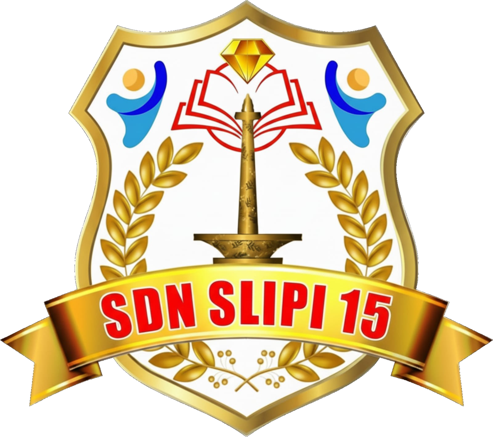

UJIAN
PRAKTIK
KELAS 6 SD · TAHUN PELAJARAN 2026/2027
SDN SLIPI 15 · JAKARTA BARAT
GURU PAI DAN BUDI PEKERTI
RH
ASPEK AL-QUR’AN · 01
Surah ke-107 · 7 ayat
Tentang orang yang mendustakan agama: menghardik anak yatim dan tidak peduli pada orang miskin.
Sentuh untuk melihat surah ›
Surah ke-95 · 8 ayat
Allah menciptakan manusia dalam bentuk yang sebaik-baiknya.
Sentuh untuk melihat surah ›
Kelancaran
Tajwid
Makharijul huruf
Adab membaca
3 · Membaca Al-Qur’an
RH
ASPEK AL-QUR’AN · 03 · 23 SURAH
114
An-Nas
113
Al-Falaq
112
Al-Ikhlas
111
Al-Lahab
110
An-Nasr
109
Al-Kafirun
108
Al-Kautsar
107
Al-Ma’un
106
Al-Qurays
105
Al-Fiil
104
Al-Humazah
103
Al-’Ashr
102
At-Takatsur
101
Al-Qori’ah
100
Al-’Adiyat
99
Al-Zalzalah
98
Al-Bayyinah
97
Al-Qadr
96
Al-Alaq
95
At-Tiin
94
Al-Insyiroh
93
Ad-Dhuha
87
Al-’Ala
Sentuh nama surah untuk menampilkan bacaannya dari ayat pertama sampai selesai. Siswa mengundi surah dari 23 surah di atas, lalu melafalkan hafalannya dengan tartil di depan penguji.
5 · Menghafal Al-Qur’an
RH
ASPEK FIQIH · 04
1
Niat
2
Membasuh muka
3
Membasuh kedua tangan sampai siku
4
Mengusap sebagian kepala
5
Membasuh kedua kaki sampai mata kaki
6
Tertib (berurutan)
6 · Berwudu
RH
ASPEK FIQIH · 04 · SEBELUM BERWUDU
نَوَيْتُ الْوُضُوْءَ لِرَفْعِ الْحَدَثِ الْأَصْغَرِ فَرْضًا لِلّٰهِ تَعَالَى
Nawaitul wuḍū’a liraf‘il ḥadaṡil aṣgari farḍal lillāhi ta‘ālā.
“Aku berniat wudu untuk menghilangkan hadas kecil, fardu karena Allah Ta‘ala.”
7 · Niat wudu
RH
ASPEK FIQIH · 04 · SETELAH BERWUDU
أَشْهَدُ أَنْ لَا إِلٰهَ إِلَّا اللّٰهُ وَحْدَهُ لَا شَرِيْكَ لَهُ، وَأَشْهَدُ أَنَّ مُحَمَّدًا عَبْدُهُ وَرَسُوْلُهُ، اَللّٰهُمَّ اجْعَلْنِيْ مِنَ التَّوَّابِيْنَ وَاجْعَلْنِيْ مِنَ الْمُتَطَهِّرِيْنَ، وَاجْعَلْنِيْ مِنْ عِبَادِكَ الصَّالِحِيْنَ
Asyhadu an lā ilāha illallāhu waḥdahū lā syarīka lah, wa asyhadu anna muḥammadan ‘abduhū wa rasūluh. Allāhummaj‘alnī minat-tawwābīna waj‘alnī minal-mutaṭahhirīn, waj‘alnī min ‘ibādikaṣ-ṣāliḥīn.
“Aku bersaksi tiada Tuhan selain Allah Yang Maha Esa, tiada sekutu bagi-Nya, dan aku bersaksi bahwa Muhammad adalah hamba dan utusan-Nya. Ya Allah, jadikanlah aku termasuk orang-orang yang bertobat dan orang-orang yang menyucikan diri, serta jadikanlah aku termasuk hamba-hamba-Mu yang saleh.”
8 · Doa setelah wudu
RH
ASPEK FIQIH · 05
1
Berdiri dan niat
2
Takbiratul ihram
3
Membaca Al-Fātiḥah
4
Rukuk dengan tumakninah
5
Iktidal
6
Sujud pertama
7
Duduk di antara dua sujud
8
Sujud kedua
9
Tasyahud akhir
10
Salam
Praktik: salat [Subuh, 2 rakaat]. Sentuh setiap gerakan untuk menampilkan bacaannya. Bacaan dilafalkan jelas agar penguji dapat menilai gerakan dan bacaan sekaligus.
9 · Salat
RH
ASPEK FIQIH · 06 · DIKUMANDANGKAN OLEH SISWA LAKI-LAKI
Azan
1
اَللّٰهُ أَكْبَرُ، اَللّٰهُ أَكْبَرُ
Allāhu akbar, Allāhu akbar
2
اَللّٰهُ أَكْبَرُ، اَللّٰهُ أَكْبَرُ
Allāhu akbar, Allāhu akbar
3
أَشْهَدُ أَنْ لَا إِلٰهَ إِلَّا اللّٰهُ
Asyhadu an lā ilāha illallāh
4
أَشْهَدُ أَنْ لَا إِلٰهَ إِلَّا اللّٰهُ
Asyhadu an lā ilāha illallāh
5
أَشْهَدُ أَنَّ مُحَمَّدًا رَسُوْلُ اللّٰهِ
Asyhadu anna Muḥammadar rasūlullāh
6
أَشْهَدُ أَنَّ مُحَمَّدًا رَسُوْلُ اللّٰهِ
Asyhadu anna Muḥammadar rasūlullāh
7
حَيَّ عَلَى الصَّلَاةِ
Ḥayya ‘alaṣ-ṣalāh
8
حَيَّ عَلَى الصَّلَاةِ
Ḥayya ‘alaṣ-ṣalāh
9
حَيَّ عَلَى الْفَلَاحِ
Ḥayya ‘alal-falāḥ
10
حَيَّ عَلَى الْفَلَاحِ
Ḥayya ‘alal-falāḥ
11
اَللّٰهُ أَكْبَرُ، اَللّٰهُ أَكْبَرُ
Allāhu akbar, Allāhu akbar
12
لَا إِلٰهَ إِلَّا اللّٰهُ
Lā ilāha illallāh
Khusus Subuh, sesudah baris 10:
اَلصَّلَاةُ خَيْرٌ مِنَ النَّوْمِ
Aṣ-ṣalātu khairum minan naum (2 kali)
11 · Lafaz azan
RH
ASPEK FIQIH · 06 · DIKUMANDANGKAN OLEH SISWA PEREMPUAN
Iqamah
1
اَللّٰهُ أَكْبَرُ، اَللّٰهُ أَكْبَرُ
Allāhu akbar, Allāhu akbar
2
أَشْهَدُ أَنْ لَا إِلٰهَ إِلَّا اللّٰهُ
Asyhadu an lā ilāha illallāh
3
أَشْهَدُ أَنَّ مُحَمَّدًا رَسُوْلُ اللّٰهِ
Asyhadu anna Muḥammadar rasūlullāh
4
حَيَّ عَلَى الصَّلَاةِ
Ḥayya ‘alaṣ-ṣalāh
5
حَيَّ عَلَى الْفَلَاحِ
Ḥayya ‘alal-falāḥ
6
قَدْ قَامَتِ الصَّلَاةُ
Qad qāmatiṣ-ṣalāh
7
قَدْ قَامَتِ الصَّلَاةُ
Qad qāmatiṣ-ṣalāh
8
اَللّٰهُ أَكْبَرُ، اَللّٰهُ أَكْبَرُ
Allāhu akbar, Allāhu akbar
9
لَا إِلٰهَ إِلَّا اللّٰهُ
Lā ilāha illallāh
12 · Lafaz iqamah
RH
ASPEK AKHLAK · 07 · SEBELAS DOA HARIAN
13 · Doa Harian
RH
ASPEK AKHLAK · DOA 1 DARI 11
اَللّٰهُمَّ بَارِكْ لَنَا فِيْمَا رَزَقْتَنَا وَقِنَا عَذَابَ النَّارِ
Allāhumma bārik lanā fīmā razaqtanā wa qinā ‘ażāban-nār.
“Ya Allah, berkahilah rezeki yang Engkau berikan kepada kami dan peliharalah kami dari siksa neraka.”
اَلْحَمْدُ لِلّٰهِ الَّذِيْ أَطْعَمَنَا وَسَقَانَا وَجَعَلَنَا مُسْلِمِيْنَ
Alḥamdu lillāhil-lażī aṭ‘amanā wa saqānā wa ja‘alanā muslimīn.
“Segala puji bagi Allah yang telah memberi kami makan dan minum serta menjadikan kami orang-orang muslim.”
14 · Doa sebelum dan sesudah makan
RH
ASPEK AKHLAK · DOA 2 DARI 11
بِاسْمِكَ اللّٰهُمَّ أَحْيَا وَبِاسْمِكَ أَمُوْتُ
Bismikallāhumma aḥyā wa bismika amūt.
“Dengan nama-Mu ya Allah aku hidup, dan dengan nama-Mu aku mati.”
اَلْحَمْدُ لِلّٰهِ الَّذِيْ أَحْيَانَا بَعْدَ مَا أَمَاتَنَا وَإِلَيْهِ النُّشُوْرُ
Alḥamdu lillāhil-lażī aḥyānā ba‘da mā amātanā wa ilaihin-nusyūr.
“Segala puji bagi Allah yang menghidupkan kami setelah mematikan kami, dan kepada-Nya kami kembali.”
15 · Doa sebelum tidur dan bangun tidur
RH
ASPEK AKHLAK · DOA 3 DARI 11
اَللّٰهُمَّ إِنِّيْ أَعُوْذُ بِكَ مِنَ الْخُبُثِ وَالْخَبَائِثِ
Allāhumma innī a‘ūżu bika minal-khubuṡi wal-khabā’iṡ.
“Ya Allah, aku berlindung kepada-Mu dari setan laki-laki dan setan perempuan.”
غُفْرَانَكَ، اَلْحَمْدُ لِلّٰهِ الَّذِيْ أَذْهَبَ عَنِّي الْأَذٰى وَعَافَانِيْ
Gufrānaka, alḥamdu lillāhil-lażī ażhaba ‘annil-ażā wa ‘āfānī.
“Aku mohon ampunan-Mu. Segala puji bagi Allah yang telah menghilangkan kotoran dariku dan menyehatkanku.”
16 · Doa masuk dan keluar kamar mandi
RH
ASPEK AKHLAK · DOA 4 DARI 11
اَللّٰهُمَّ افْتَحْ لِيْ أَبْوَابَ رَحْمَتِكَ
Allāhummaftaḥ lī abwāba raḥmatik.
“Ya Allah, bukakanlah untukku pintu-pintu rahmat-Mu.”
اَللّٰهُمَّ إِنِّيْ أَسْأَلُكَ مِنْ فَضْلِكَ
Allāhumma innī as’aluka min faḍlik.
“Ya Allah, sesungguhnya aku memohon karunia-Mu.”
17 · Doa masuk dan keluar masjid
RH
ASPEK AKHLAK · DOA 5 DARI 11
اَللّٰهُمَّ إِنِّيْ أَسْأَلُكَ خَيْرَ الْمَوْلَجِ وَخَيْرَ الْمَخْرَجِ، بِسْمِ اللّٰهِ وَلَجْنَا وَبِسْمِ اللّٰهِ خَرَجْنَا وَعَلَى اللّٰهِ رَبِّنَا تَوَكَّلْنَا
Allāhumma innī as’aluka khairal-maulaji wa khairal-makhraj, bismillāhi walajnā wa bismillāhi kharajnā wa ‘alallāhi rabbinā tawakkalnā.
“Ya Allah, aku mohon kebaikan tempat masuk dan tempat keluar. Dengan nama Allah kami masuk dan keluar, dan kepada Allah kami bertawakal.”
بِسْمِ اللّٰهِ تَوَكَّلْتُ عَلَى اللّٰهِ لَا حَوْلَ وَلَا قُوَّةَ إِلَّا بِاللّٰهِ
Bismillāhi tawakkaltu ‘alallāh, lā ḥaula wa lā quwwata illā billāh.
“Dengan nama Allah aku bertawakal kepada Allah. Tiada daya dan kekuatan kecuali dengan pertolongan Allah.”
18 · Doa masuk dan keluar rumah
RH
ASPEK AKHLAK · DOA 6 DARI 11
رَضِيْتُ بِاللّٰهِ رَبًّا وَبِالْإِسْلَامِ دِيْنًا وَبِمُحَمَّدٍ نَبِيًّا وَرَسُوْلًا، رَبِّ زِدْنِيْ عِلْمًا وَارْزُقْنِيْ فَهْمًا
Raḍītu billāhi rabbā, wa bil-islāmi dīnā, wa bi muḥammadin nabiyyaw wa rasūlā. Rabbi zidnī ‘ilmā warzuqnī fahmā.
“Aku rida Allah sebagai Tuhanku, Islam sebagai agamaku, dan Muhammad sebagai nabi dan rasul. Ya Tuhanku, tambahkanlah ilmuku dan berilah aku pemahaman.”
19 · Doa belajar
RH
ASPEK AKHLAK · DOA 7 DARI 11
سُبْحَانَ الَّذِيْ سَخَّرَ لَنَا هٰذَا وَمَا كُنَّا لَهُ مُقْرِنِيْنَ وَإِنَّا إِلٰى رَبِّنَا لَمُنْقَلِبُوْنَ
Subḥānal-lażī sakhkhara lanā hāżā wa mā kunnā lahū muqrinīn, wa innā ilā rabbinā lamunqalibūn.
“Mahasuci Allah yang telah menundukkan kendaraan ini untuk kami, padahal kami sebelumnya tidak mampu menguasainya. Sesungguhnya kami akan kembali kepada Tuhan kami.”
20 · Doa naik kendaraan
RH
ASPEK AKHLAK · DOA 8 DARI 11
اَللّٰهُمَّ صَيِّبًا نَافِعًا
Allāhumma ṣayyiban nāfi‘ā.
“Ya Allah, turunkanlah hujan yang bermanfaat.”
21 · Doa turun hujan
RH
ASPEK AKHLAK · DOA 9 DARI 11
اَللّٰهُمَّ كَمَا حَسَّنْتَ خَلْقِيْ فَحَسِّنْ خُلُقِيْ
Allāhumma kamā ḥassanta khalqī fa ḥassin khuluqī.
“Ya Allah, sebagaimana Engkau telah memperindah rupaku, maka perindahlah akhlakku.”
22 · Doa bercermin
RH
ASPEK AKHLAK · DOA 10 DARI 11
اَللّٰهُمَّ افْتَحْ عَلَيْنَا حِكْمَتَكَ وَانْشُرْ عَلَيْنَا رَحْمَتَكَ يَا ذَا الْجَلَالِ وَالْإِكْرَامِ
Allāhummaftaḥ ‘alainā ḥikmataka wansyur ‘alainā raḥmataka yā żal-jalāli wal-ikrām.
“Ya Allah, bukakanlah hikmah-Mu kepada kami dan limpahkanlah rahmat-Mu kepada kami, wahai Zat yang memiliki keagungan dan kemuliaan.”
23 · Doa pembuka hati
RH
ASPEK AKHLAK · DOA 11 DARI 11
اَللّٰهُمَّ إِنَّ الضُّحَاءَ ضُحَاؤُكَ، وَالْبَهَاءَ بَهَاؤُكَ، وَالْجَمَالَ جَمَالُكَ، وَالْقُوَّةَ قُوَّتُكَ، وَالْقُدْرَةَ قُدْرَتُكَ، وَالْعِصْمَةَ عِصْمَتُكَ
Allāhumma innaḍ-ḍuḥā’a ḍuḥā’uka, wal-bahā’a bahā’uka, wal-jamāla jamāluka, wal-quwwata quwwatuka, wal-qudrata qudratuka, wal-‘iṣmata ‘iṣmatuk.
“Ya Allah, sesungguhnya waktu duha adalah waktu duha-Mu, keagungan adalah keagungan-Mu, keindahan adalah keindahan-Mu, kekuatan adalah kekuatan-Mu, kekuasaan adalah kekuasaan-Mu, dan penjagaan adalah penjagaan-Mu.”
24 · Doa setelah salat duha (bagian 1)
RH
ASPEK AKHLAK · DOA 11 DARI 11
اَللّٰهُمَّ إِنْ كَانَ رِزْقِيْ فِي السَّمَاءِ فَأَنْزِلْهُ، وَإِنْ كَانَ فِي الْأَرْضِ فَأَخْرِجْهُ، وَإِنْ كَانَ مُعْسِرًا فَيَسِّرْهُ، وَإِنْ كَانَ حَرَامًا فَطَهِّرْهُ، وَإِنْ كَانَ بَعِيْدًا فَقَرِّبْهُ، بِحَقِّ ضُحَائِكَ وَبَهَائِكَ وَجَمَالِكَ وَقُوَّتِكَ وَقُدْرَتِكَ، آتِنِيْ مَا آتَيْتَ عِبَادَكَ الصَّالِحِيْنَ
Allāhumma in kāna rizqī fis-samā’i fa anzilhu, wa in kāna fil-arḍi fa akhrijhu, wa in kāna mu‘siran fa yassirhu, wa in kāna ḥarāman fa ṭahhirhu, wa in kāna ba‘īdan fa qarribhu, biḥaqqi ḍuḥā’ika wa bahā’ika wa jamālika wa quwwatika wa qudratik, ātinī mā ātaita ‘ibādakaṣ-ṣāliḥīn.
“Ya Allah, jika rezekiku di langit turunkanlah, jika di bumi keluarkanlah, jika sukar mudahkanlah, jika haram sucikanlah, jika jauh dekatkanlah. Berkat waktu duha, keagungan, keindahan, kekuatan, dan kekuasaan-Mu, berikanlah kepadaku apa yang Engkau berikan kepada hamba-hamba-Mu yang saleh.”
25 · Doa setelah salat duha (bagian 2)
RH
PENUTUP
Selamat menempuh Ujian Praktik. Semoga Allah memudahkan setiap langkah kalian. Āmīn.
SDN Slipi 15 Jakarta Barat
RH